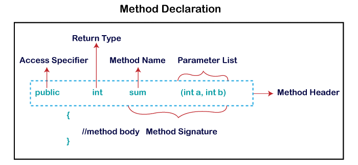

A method is a block of code or collection of statements or a set of code grouped together to perform a certain task or operation. It is used to achieve the reusability of code.
Java provides four types of access specifier:
There are two types of methods in Java:
In Java, predefined methods are the method that is already defined in the Java class libraries is known as predefined methods. It is also known as the standard library method or built-in method. Ex length(), equals(), compareTo(), sqrt().
public class Demo
{
public static void main(String[] args)
{
// using the max() method of Math class
System.out.print("The maximum number is: " + Math.max(9,7));
}
}
The method written by the user or programmer is known as a user-defined method. These methods are modified according to the requirement.
import java.util.Scanner;
public class EvenOdd
{
public static void main (String args[])
{
//creating Scanner class object
Scanner scan=new Scanner(System.in);
System.out.print("Enter the number: ");
//reading value from user
int num=scan.nextInt();
//method calling
findEvenOdd(num);
}
//user defined method
public static void findEvenOdd(int num)
{
//method body
if(num%2==0)
System.out.println(num+" is even");
else
System.out.println(num+" is odd");
}
}
A method that has static keyword is known as static method. In other words, a method that belongs to a class rather than an instance of a class is known as a static method. The main advantage of a static method is that we can call it without creating an object. It can access static data members and also change the value of it.
public class Display
{
public static void main(String[] args)
{
show();
}
static void show()
{
System.out.println("It is an example of static method.");
}
}
The method of the class is known as an instance method. It is a non-static method defined in the class. Before calling or invoking the instance method, it is necessary to create an object of its class.
public class InstanceMethodExample
{
public static void main(String [] args)
{
//Creating an object of the class
InstanceMethodExample obj = new InstanceMethodExample();
//invoking instance method
System.out.println("The sum is: "+obj.add(12, 13));
}
int s;
//user-defined method because we have not used static keyword
public int add(int a, int b)
{
s = a+b;
//returning the sum
return s;
}
}